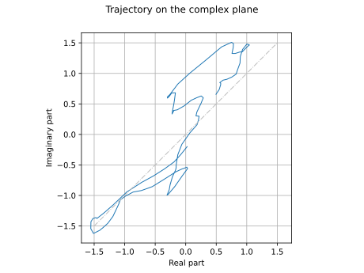
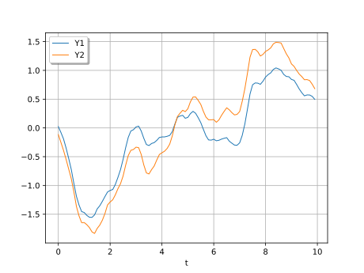
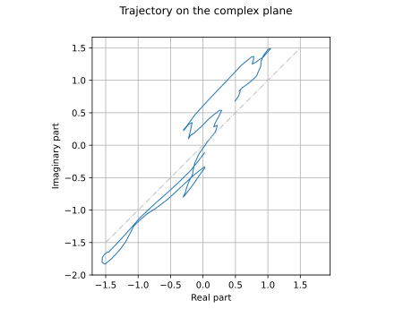

Note
Go to the end to download the full example code.
Create a Gaussian Process with the Kronecker covariance model¶
A KroneckerCovarianceModel takes a covariance function
with 1-d output and makes its output multidimensional.
In this example, we use one to define a Gaussian Process with 2 correlated scalar outputs.
For that purpose, a covariance matrix for the outputs is needed
in addition to a scalar correlation function ![\rho]() .
.
import openturns as ot
import openturns.viewer as otv
from numpy import square
Create a Kronecker covariance function¶
First, define the scalar correlation function .
theta = [2.0]
rho = ot.MaternModel(theta, 1.5)
Second, define the covariance matrix of the outputs.
[[ 1 0.9 ]
[ 0.9 1.5 ]]
Use these ingredients to build the KroneckerCovarianceModel.
Build a Gaussian Process with Kronecker covariance function¶
Define a GaussianProcess with null trend using this covariance function.
gp = ot.GaussianProcess(kronecker, ot.RegularGrid(0.0, 0.1, 100))
Sample and draw a realization of the Gaussian process.
ot.RandomGenerator.SetSeed(5)
realization = gp.getRealization()
graph = realization.drawMarginal(0)
graph.add(realization.drawMarginal(1))
graph.setYTitle("")
graph.setTitle("")
graph.setLegends(["Y1", "Y2"])
graph.setLegendPosition("upper left")
_ = otv.View(graph)

Draw the trajectory on the complex plane.
graph = realization.draw()
graph.setXTitle("Real part")
graph.setYTitle("Imaginary part")
graph.setTitle("Trajectory on the complex plane")
diagonal = ot.Curve([-1.5, 1.5], [-1.5, 1.5])
diagonal.setLineStyle("dotdash")
diagonal.setColor("grey")
graph.add(diagonal)
_ = otv.View(graph, square_axes=True)

Change the correlation between the outputs¶
By setting covariance matrix of the outputs, we have implicitly set the amplitudes and the correlation matrix of the Kronecker covariance function.
The amplitudes are the square roots of the diagonal elements of the covariance matrix.
# Recall C
print(C)
[[ 1 0.9 ]
[ 0.9 1.5 ]]
# Print squared amplitudes
print(square(kronecker.getAmplitude()))
[1. 1.5]
The diagonal of the correlation matrix is by definition filled with ones.
[[ 1 0.734847 ]
[ 0.734847 1 ]]
Since the correlation matrix is symmetric and its diagonal necessarily contains ones, we only need to change its upper right (or bottom left) element.
output_correlation[0, 1] = 0.9
print(output_correlation)
[[ 1 0.9 ]
[ 0.9 1 ]]
Changing the output correlation matrix does not change the amplitudes.
kronecker.setOutputCorrelation(output_correlation)
print(square(kronecker.getAmplitude()))
[1. 1.5]
Let us resample a trajectory.
To show the effect ot the output correlation change, we use the same random seed in order to get a comparable trajectory.
gp = ot.GaussianProcess(kronecker, ot.RegularGrid(0.0, 0.1, 100))
ot.RandomGenerator.SetSeed(5)
realization = gp.getRealization()
graph = realization.drawMarginal(0)
graph.add(realization.drawMarginal(1))
graph.setYTitle("")
graph.setTitle("")
graph.setLegends(["Y1", "Y2"])
graph.setLegendPosition("upper left")
_ = otv.View(graph)

graph = realization.draw()
graph.setXTitle("Real part")
graph.setYTitle("Imaginary part")
graph.setTitle("Trajectory on the complex plane")
diagonal = ot.Curve([-1.5, 1.5], [-1.5, 1.5])
diagonal.setLineStyle("dotdash")
diagonal.setColor("grey")
graph.add(diagonal)
_ = otv.View(graph, square_axes=True)

Display all figures